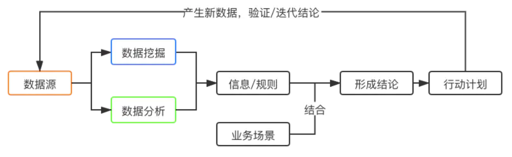
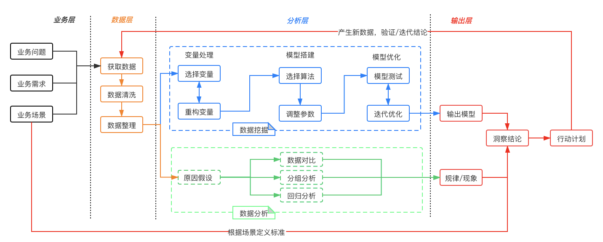

什么是数据洞察
基本定义
在说数据洞察前，我们先来阐述下数据分析/数据挖掘/数据洞察这几个词的定义。
- 数据分析（Business Analysis）：传统定义的数据分析，一般通过SQL/Python/Excel等工具汇总数据，结合对业务的理解和经验，主要是由人将数据转换为信息；
- 数据挖掘：一般通过建模来挖掘数据内在的关联和信息，主要是机器从训练集中发现一定的规律，从而将数据转换为信息；
- 数据洞察：通过数据分析/挖掘，将数据转换为信息，结合业务场景，梳理出影响业务结果的因素和作用链路，从而正确地对于问题进行归因和得出改进的方向。
所以我们可以看出数据分析和数据挖掘是殊途同归的，最终都收归于数据洞察的体系中。
如何理解数据洞察
可能上面关于数据洞察的定义还有一些晦涩，不好理解，接下来我说说我个人的理解：
- 数据分析和数据挖掘更加偏向于数据处理的手段，通过业务或者机器的方式将数据加工成一些信息 ，比如：啤酒和纸尿裤放在销售量比单卖要高；用户喜欢在夏天到来时才购买游泳装备等等。
- 而数据洞察更强调的对多种信息的加工和处理 —— 结合业务场景，产出对于业务发展有价值的结论。
既然数据洞察的目的是推动业务的发展，那么就需要我们以业务为导向，关注业务中实际遇到的需求或者问题。并且在得出结论后，能够产生可落地的action，去验证和迭代我们的结论，从而推动业务的发展。
我们用一张图来描述下数据洞察的一个完整链路 ：

数据洞察有三要素：数据、业务场景、标准
数据：我们得出的结论要基于数据，避免受到个案或者特例的影响 ；
业务场景：少了业务场景，就无法理解孤立的数据对于业务的实际意义；
标准：结合业务场景，我们才能对于数据的好与坏制定出标准，比如说身高150对于成年男性可能不算高，但是对于小学生来说却是很高了；
如何做数据洞察
以上我们了解了数据洞察的一些基本概念，接下来我们来讲讲如何实际操作。

图上步骤主要分为以下几个层级：
1、业务层：结合业务的问题和需求，先定义需要哪些数据，以及这些数据在场景中的含义
2、数据层：通过数据埋点上报、业务数据库同步等方式获取业务所需的数据，进行相应的数据清洗，避免脏数据的影响；将数据进行合并和整理，便于分析；
3、分析层：通过数据分析或数据挖掘的手段从数据中获取规律、现象或者数据模型
4、输出层：结合分析层得到的信息和业务场景，输出洞察结论，制定行动计划；在行动后根据新产生的数据验证之前得到的结论的有效性，进行迭代；
最终通过以上的循环，我们可以不断地积累不同业务场景下的洞察结论。
通过对数据洞察的了解 ，我们可以发现，数据洞察与业务的结合是非常紧密的 。每个洞察结论离开了其背后的业务场景可能都是无效的。所以数据洞察不存在“银弹“或者“万金油”，我们还是要通过不断地实操进行场景上的积累 ，从而提升数据洞察力。
闲聊OLTP/OLAP
企业日常的各个环节都会产生数据，一个企业从小到大的过程中，建设IT系统的时刻是一个分隔点。但在此之前，数据零散分布在邮箱、发票、单据、APP等各种地方。当企业规模达到一定程度时，则必须要建设IT系统，此时，数据开始在各种系统（ERP、CRM、MES等）中积累。
数据自身的价值随着其体量不断的累积在一直增加，所以通常我们也会把企业自身产生的有价值的数据称之为企业数据资产。
企业通过从数据中获取的知识，能够帮助企业发现问题与机遇并进行正确的决策，以达到赢得市场之目的，而数据分析则是实现以上目标的重要手段之一。
数据分析体系的建设往往是在初次进行信息化建设后某个时间开始，数据分析体系与其他业务类系统有着显著的不同：
1、业务类系统主要是供基层人员使用，进行一线业务操作，通常被称为OLTP（On-Line Transaction Processing，联机事务处理）。
2、数据分析的目标则是探索并挖掘数据价值，作为企业高层进行决策的参考，通常被称为OLAP（On-Line Analytical Processing，联机分析处理）。
3、从功能角度来看，OLTP负责基本业务的正常运转，而业务数据积累时所产生的价值信息则被OLAP不断呈现，企业高层通过参考这些信息会不断调整经营方针，也会促进基础业务的不断优化，这是OLTP与OLAP最根本的区别。
4、一般来说，OLAP不应该对OLTP产生任何影响，在理想情况下，OLTP应该完全感觉不到OLAP的存在。
数据湖与数据中台
先说数据湖
数据湖（Data Lake）概念的提出时间仅次于大数据，可以说是一个很老的概念了，它最早是在2011年由CITO Research网站的CTO和作家Dan Woods所提出，其比喻是：如果我们把数据比作大自然的水，那么各个江川河流的水未经加工，源源不断地汇聚到数据湖中。
数据湖的定义（来自维基百科）：
数据湖（Data Lake）是一个以原始格式存储数据的存储库或系统，它按原样存储数据，而无需事先对数据进行结构化处理。一个数据湖可以存储结构化数据（如关系型数据库中的表）、半结构化数据（如CSV、日志、XML、JSON）、非结构化数据（如电子邮件、文档、PDF）和二进制数据（如图形、音频、视频）。
数据湖本质上就是一个大数据平台，它随着大数据技术的不断完善，目前成熟的数据湖体系已具备了大数据存储、大数据处理、机器学习、大数据分析等能力。国外公司像亚马逊的AWS、Informatica、IBM、微软等都有数据湖的相关产品和解决方案，而在国内，目前这方面的产品和方案还很少见。
再谈数据中台
其实数据中台是咱们中国人自己创造的一个概念，在国外并没有太多人谈数据中台。但即使如此，在国内目前也还没有对数据中台形成一个统一的认知和标准的定义。
1、“中台”的鼻祖——阿里巴巴对数据中台的定义：
数据中台是数据+技术+产品+组织的组合，是企业开展新型运营的一个中枢系统。具象地说，它是一套解决方案，抽象的理解，它是一种新的公司运营理念。
2、数澜科技对数据中台的理解：
数据中台是让数据持续用起来的一套机制，经过业务数据化、数据资产化、资产服务化，并在有权限管理的情况下以API的方式开放出去。
它们之间的关系
在大数据时代，随着数据量的不断增加，数据形式也越来越复杂，而以数据仓库为代表的、现有的数据存储和处理方式已无法满足海量、多样的数据处理需求，在这样的背景下产生了“数据湖”，数据湖是将复杂的事物具象化，以一个形象的名字，来反应它在大数据存储和处理方面的优势和能力。
数据湖作为一个集中的存储库，可以在其中存储任何形式、任意规模的数据。在数据湖中，可以不对存储的数据进行结构化，只有在使用数据的时候，再利用数据湖强大的数据查询、处理、分析等能力组件对数据进行处理和应用。因此，数据湖具备运行不同类型数据分析的能力。
而数据中台从技术层面承接了数据湖，它通过数据技术，对海量、多源、多样的数据进行采集、处理、存储、计算，同时统一标准，以标准形式进行数据存储，形成大数据资产，以满足前台数据分析和应用的需求。
总的来说，数据中台更强调应用，离业务更近，强调服务于前台的能力，实现逻辑、算法、标签、模型、数据资产的沉淀与复用，能够更快速的响应业务和应用开发的需求，且可追溯、更精准。